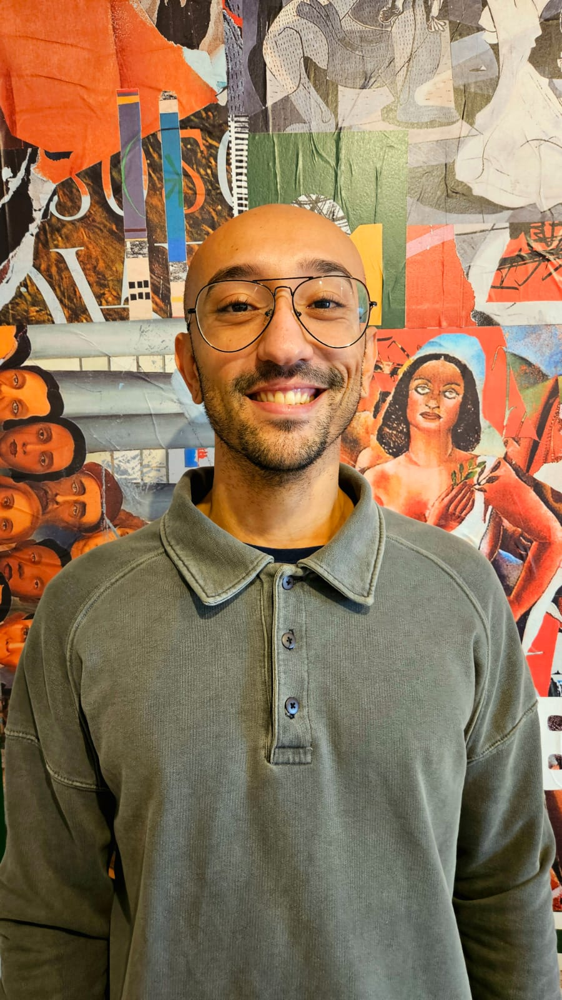

AI Engineer & Mlops Engineer · São Paulo, BR
Profissional em Inteligência Artificial Generativa e MLOps, desenvolvendo e colocando em produção sistemas multi-agentes, pipelines RAG e arquiteturas cloud-native de alta disponibilidade no Itaú Unibanco com stack Python + AWS.

Quem sou
Formado em Engenharia de Produção (2019), encontrei na ciência de dados e na inteligência artificial o ambiente ideal para aplicar raciocínio analítico à resolução de problemas de negócio em escala.
Hoje atuo como AI Engineer no Itaú Unibanco, cobrindo o ciclo completo de engenharia de IA: da construção de pipelines ETL e dashboards até o deploy de sistemas multi-agentes com LLMs, RAG, Prompt Engineering e APIs cloud-native de alta disponibilidade — sempre com Python e infraestrutura AWS.
Meu foco está em entregar soluções que impactam diretamente a produtividade de equipes e a experiência dos clientes, garantindo observabilidade, escalabilidade e manutenibilidade em produção.
Trajetória
Atuação em projetos de alto impacto, do design de arquitetura ao deploy em produção.
Desenvolvimento e operacionalização de soluções de IA Generativa e MLOps com impacto direto na produtividade de times comerciais e na experiência dos clientes. Responsável pelo ciclo completo: ideação, arquitetura, desenvolvimento, deploy e monitoramento em produção.
Construção de portfólio técnico com projetos de Machine Learning, análise exploratória e desenvolvimento web, aplicando metodologias de Data Science end-to-end em datasets de competições Kaggle e casos de negócio reais.
Competências técnicas
Habilidades organizadas por domínio para uma visão clara do meu perfil técnico.
Portfólio
Uma seleção de projetos pessoais que demonstram aplicações práticas de IA, dados e engenharia de software.
Aplicação web que simula batalhas de rap entre personagens icônicos da cultura hip-hop, com rimas geradas em tempo real por LLMs via HuggingFace Router (compatível com OpenAI). Cada MC possui personalidade, vocabulário e estilo únicos definidos via Prompt Engineering avançado — sistema prompt + user prompt segregados por turno. Um juiz de IA avalia flow, punchline e criatividade em formato JSON estruturado ao final de cada round. Construído com Flask, retry automático para modelos em cold-start e deploy via wsgi.
Gerador de imagens deliberadamente ruins com interface de galeria de arte pública. O usuário descreve o que quer, escolhe o nível de "fajutice" (de Iniciante Promissor a Pintor Amaldiçoado) e a IA — via modelo FLUX.1-schnell da HuggingFace — produz obras artisticamente questionáveis. As imagens ficam expostas na galeria por 3 dias (máx. 15 obras simultâneas), armazenadas como base64 em JSON sem necessidade de disco ou banco externo. Projeto explora negative prompt engineering e parâmetros não-convencionais (guidance_scale 0.0) para maximizar o caos visual.
Plataforma web dinâmica construída do zero com Python e Flask. Demonstra domínio de desenvolvimento full-stack, roteamento HTTP, templates Jinja2 e deploy em ambiente de produção.
Modelo de classificação em R para identificar fraudes em tráfego de cliques de apps mobile. Dataset com centenas de milhões de registros, abordando desequilíbrio de classes e técnicas de feature engineering para padrões de tráfego anômalo.
Modelo preditivo de probabilidade de churn para clientes de operadora de telecomunicações. Pipeline end-to-end com exploração de dados, engenharia de features, seleção de modelo e avaliação de métricas de negócio (recall, precision, ROI estimado).
Identificação do nível de satisfação de clientes bancários com base em dados anonimizados. Destaque para técnicas de redução de dimensionalidade e seleção de variáveis em dataset com alta dimensionalidade.
Vamos conversar
Aberto a conversas sobre projetos de IA, oportunidades de colaboração e posições que envolvam Generative AI, MLOps e arquiteturas de dados em escala.